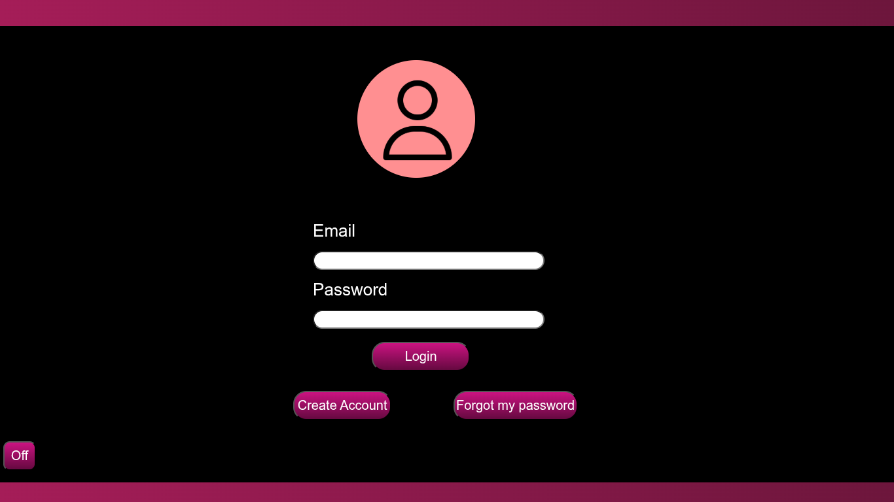
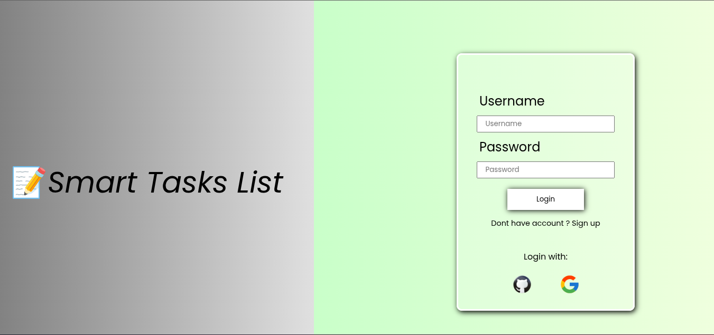

![instagram-new--v1]()


Jornada 2026
Olá para todos os seres que estão acessando esse repositório, espero que estejam todos bem. Nesta página, quero documentar a minha trajetória durante esse ano de 2026, principalmente durante a faculdade, trazendo mais como um relato de vivência, além disso, enquanto eu vou produzindo o relato, eu venho atualizando a minha página, acrescentando as principais seções e as principais partes, fiquem a vontade para analizar a minha trajetória.
Quem sou eu
Heitor Silva Mafaldo é um jovem brasileiro que gosta de conhecer e aprender sobre as demais tecnologias que existem atualmente, formou-se no Instituto Federal da Paraíba no ano de 2025 e com isso, desenvolveu diversas habilidades técnicas, como aprendendo sobre lógica de programação, hardware,software e redes de computadores. Atualmente, ele possui um canal no youtube o qual ajuda as pessoas a desenvolverem mais as suas habilidades com lógica de programação, ensinando sobre diversas tecnologias da atualidade. Outrossim, ele foi estudante da Alura, uma das maiores escolas de tecnologia do Brasil, conquistando mais de 20 certificados em tecnologias Back-End, Front-End e DevOps.
Principais skills
HTML é uma linguagem de marcação.
Folha de estilo em cascata
Linguagem de programação full-stack
Linguagem de programação lançada em 1991.
Linguagem de programação lançada em 1995.
Projetos Realizados
Desenvolvimento de uma ferramenta para divulgação de jogos online com acessibilidade a informação.
 Saiba mais sobre eleLista de Tarefas, utilizando HTML/CSS/JS/Python+Django.
 Saiba mais sobre eleJaneiro
-
01 de Janeiro
Comecei as 23:59 do dia 31 de dezembro de 2025 a criação do meu repositório do GitHub e as 0:30 do dia 1 de Janeiro de 2026 enviei os primeiros arquivos HTML e CSS, juntamente o a pasta de assets.
-
02 de Janeiro
Iniciei a criação de conteúdos de programação para o canal, ensinando sobre diversos assuntos de tecnologias que são interessantes.
-
03 de Janeiro
Começei a realizar a criação de alguns vídeos sobre Python e Javascript, o qual não deram muitas views, mas tudo bem, o canal ainda estava no começo.
-
04 de Janeiro
Iniciei o projeto de começar o 'footer' da minha página, aparentemente eu gosto bastante de ficar programando, eu estou sentindo que depois que eu sai da minha escola do ensino médio eu me senti mais liberdade de eu focar no que eu mais queria, que era aprender mais e mais programação.
-
05 de Janeiro
Iniciarei novos projetos no GitHub, projetos esses que ajudarão boa parte dos usuários, porém, só penso em utilizar ele para poder escrever o meu Trabalho de Conclusão de Curso na minha faculdade, em que será no meu Diploma 1, enquanto eu não entrar na especialização em engenharia de software.
-
06 de Janeiro
Que começe o projeto Python !!!!. Aparentemente, já comecei a produção dos slides, porem, não sei se isso irá funcionar, porque o público não é muito presente no meu canal. Mas mesmo assim, vou produzir, acho que será um projeto legal e bacana para as pessoas.
-
07 de Janeiro
Acho que eu vou tirar algumas mini férias antes de eu gravar esse curso de python.
-
08 de Janeiro
Hoje é oficialmente o dia em que o curso de python irá se inicializar, espero que esteja tude certo para começar. Além disso, pretendo mmodificar algumas coisas no meu game, deixando ele com um design melhor e mais agradável.
-
09 de Janeiro
Bem, o curso não começou ontem, devido alguns problemas técnicos, porem, ele tem tudo para começar hoje, e espero que de certo. Voltando aqui durante a noite, e posso confirmar que sim, deu bastante certo. Além disso, hoje foi um dia histórico, resolvi o meu primeiro LeetCode, sem ajuda de IA ou algo do tipo.
-
10 de Janeiro
Parabens Pai !!!
-
11 de Janeiro
Criação de um novo projeto de Django+Front-End, uma lista de tarefas inteligênte, espero que esse projeto seja legal o seu desenvolvimento.
-
12 de Janeiro
Um dos relatos que eu irei trazer antes de entrar de férias !!!
-
13 de Janeiro
Um dos relatos que eu irei trazer antes de entrar de férias !!!
-
14 de Janeiro
Estou aqui, estou realizando commits ainda hoje, espero que esses commits estejam todos sendo registrado no site :*)
-
15 de Janeiro
Amanhã é ENEM cara, resultado, hoje já foi um combo de um dia ruim, amanhã será o próximo.
-
16 de Janeiro
Poisé, mais um combo de dia ruim, esquece.
-
17 de Janeiro
Tentando me reerguer
-
18 de Janeiro
Melhorando aos poucos, as férias estão chegando ao fim, estou animado para os próximos projetos.
-
19 de Janeiro
As coisas estão prestes a começar
-
20 de Janeiro
Bem, as férias acabaram, e agora os projetos irão começar, os cursos e a programação normal do dia.
A primeira e grande derrota ocorreu hoje
-
21 de Janeiro
Começando criando e atualizando alguns projetos e também para o curso de python. Hoje resolvi mais um leetcode !!!
-
22 de Janeiro
Para hoje, irei começar criando atualizações para o projeto e adicionando o relato para o dia de hoje. Além disso, vou resolver a lista de exercícios que eu criei no curso de python na aula 02. Mais um pouco de dia ruim, mas vai passar.
-
23 de Janeiro
Vamos lá, mais um novo dia, vamos começar a melhorar as coisas, o dia de ontem foi triste, hoje dá pra ser melhor.
-
24 de Janeiro
Melhorando o projeto da 'smart-task-list', acrescentando a opção de adicionar as tasks, o projeto está quase finalizado. Que loucura hoje, resolvi um leetcode muito fácil, fiquei até surpreso
-
25 de Janeiro
Estou treinando muito leetcode e pretendo ficar mestre nessa arte de programar.
-
26 de Janeiro
Hoje os meus projetos de vídeo ficarão mais interessantes, hoje será legal. Bem, acabou que o dia não foi como esperava, tive algumas coisas ruins,
Hoje, mais uma derrota 1
-
27 de Janeiro
Hoje foi bom, finalmente consegui adicionar algo que o meu headset precisava.
-
28 de Janeiro
Hoje será o dia do 3º video do curso de python, com a nova qualidade de áudio. Terceira aula postada
-
29 de Janeiro
Passei no curso que queria, obrigado Deus !!!! Agora a coisa ficou mais séria, com essa nova fase, preciso ficar 119% melhor nos quesitos de programação, não posso perder mais tempo.
-
30 de Janeiro
Vou começar a fazer algumas coisas da faculdade, além disso, o projeto Assembly precisa sair logo. Mais um projeto publicado ao Github, o projeto de revisar as linguagens de programação, focando no estudo delas, e cada evolução é um commit ao github.
-
31 de Janeiro
Último dia do mês de Janeiro, confesso que esse mês foi um bom mês, um início de ano bem melhor do que o ano passado, voltei a ouvir NEFFEX, melhor coisa desse ano, nostalgia demais, espero que os projetos para fevereiro sejam bons.
Fevereiro
-
1 de Fevereiro
Primeiro dia de fevereiro, acho que eu deveria repensar sobre meu post do reddit, acho que aquilo foi devido a não conseguir resolver o leetcode de 'Single Number', mas vou deixar o post lá para rever as vezes. Eu realmente tou sem ideias de projetos, eu queria muito poder me aprofundar em mais tecnologias, na realidade , eu queria muito ser um bom programador, eu quero muito isso, muito mesmo, é a minha forma de ser bom em algo, eu preciso desse conhecimento.
-
2 de Fevereiro
Pretendo focar em minhas tecnologias, como python+(Django), Java, C e HTML+CSS. Além disso, acho que encontrei a melhor forma de eu conseguir estudar de maneira melhor, eu acho. (Estou próximo de chegar as 400 linhas de código)
-
3 de Fevereiro
O canal até agora está com um bom desempenho, espero muito chegar na meta que eu pretendo chegar. Aparentemente, os vídeos de review de livros são bem vistos aqui no canal, ambos foram bem visualizados pelo público.
MAIS UMA DERROTA (3x)
. -
4 de Fevereiro
Bem, vou tentar me reerguer novamente, mas tenho alguns planos para o dia de hoje, verifiquei algumas tendências do canal e acho que será interessante o que irei realizar. Bem, acabou como todos os vídeos, mas teve algumas views, realmente, a thumbnail impactou muito com o conteúdo e com os cliks, mas acho que deveria ser um pouco mais.
-
5 de Fevereiro
Hoje espero chegarm em 600 subs, sei que isso é muito pouco e que vai faltar muito ainda, mas eu pretendo chegar nesse feito. Eu queria muito poder chegar nisso, pretendo ver as principais tendências do youtube. Os dias estão mais chatinhos, as ideias de projetos estão cada vez mais complicada, acho que já fiz de tudo em cada projeto, acho que já é o suficiente, muito dificil pensar em ideias novas .
Perdi again
-
6 de Fevereiro
Os projetos antigos voltarão para o canal, espero que agora tudo volte ao normal para o canal, os 600 inscritos precisam acontecer. Adeus Alura :( '06/02/2025-06/02/2026'. Eu gostei do vídeo de hoje, particcularmente gostei muito dele, achei o conteúdo dele legal, e aprendi sobre os diagramas e a ler bibliotecas em inglês, acho que eu precisava disso.
-
7 de Fevereiro
O dia de ontem foi um pouco ruim devido ao cancelamento da plataforma Alura, eu não me arrependo pois eu completei o que eu queria, que era me aprofundar em Django e Front-End. Além disso, gostei do vídeo de ontem, o vídeo de markdown foi bastante legal e gostei de brincar com aquelas tecnologias e frameworks. os 600 inscritos mais dificeis da minha vida foram esses. O github agora deixou todos os meus commits verdes claros, agora ficou interessante fazer mais projetos e commits.
-
8 de Fevereiro
Hoje quero fazer pequenos experimentos, preciso entender se isso é prejudicial ou não, além disso, o canal falta pouco para 600 inscritos, e ta muito complicado de isso acontecer, os números não sobem. Menos dois inscritos, ta difícil demais a continuação e novos inscritos, não consigo ter uma base boa. Acho que aparentemente ou é a edição ou é o alguma coisa que as pessoas não estão gostando, como a qualidade, as vezes o vídeo bomba ou não, no caso do vídeo de hoje não funcionou, e que chuva deu hoje. Aquela thumbnail de POO e as visualizações estão estaginadas, além disso, as tags foram mudadas, foram colocadas mais tags para o vídeo de hoje, mais tecnologias. tou sem ideias hahahaha
-
9 de Fevereiro
Hoje eu ganhei 2 inscritos, ou seja, voltei para onde eu estava kkkkkk, mas ok, é melhor do que diminuir mais ainda. Além disso, o resultado da documentação vai ser postado hoje, espero da tudo certo. Olha, o experimento que eu fiz ontem está funcionando muito bem, estou me sentindo cada vez mais motivado e com mais disciplina, ainda está chovendo no dia de hoje,
PERDI NOVAMENTE
. -
10 de Fevereiro
Bem, hoje eu pretendo começar um projeto que possivelmente possa mudar a minha vida por completo, além disso, descobri que irei começar as minhas aulas apenas em agosto, mas específico no dia 3 de agosto, pois vou começar mais tarde do que os demais que vão começar agora, isso é uma pena demais, teste.